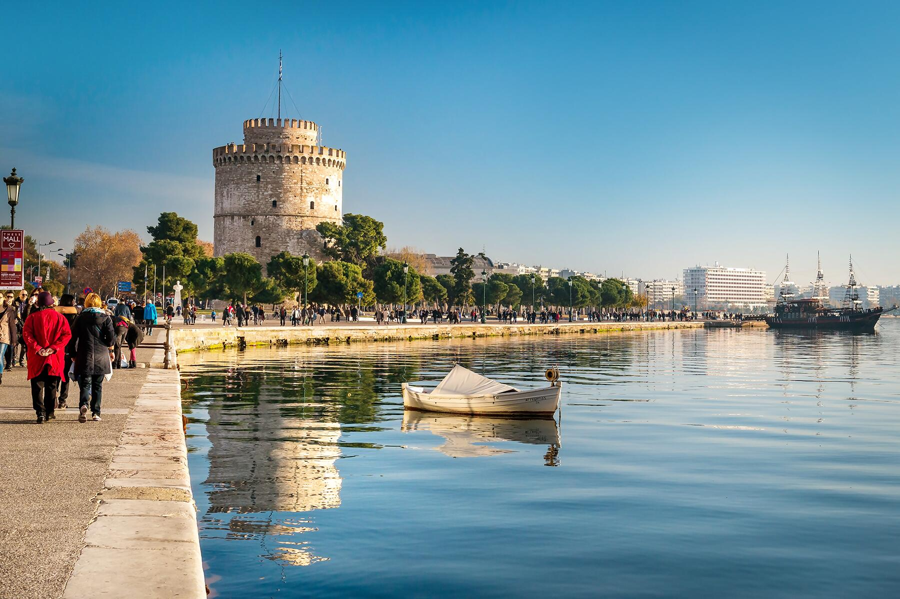

Γενικά
Ένα από τα πράγματα που μου αρέσει πολύ να κάνω σε περιόδους που δεν έχω πολλές υποχρεώσεις, είναι να κάνω ταξίδια.
Γιατί; Επειδή με κάνουν να χαλαρώνω, να ξεχνάω τη καθημερινότητα μου, να ανακαλύπτω νέους πολιτισμούς, να γνωρίζω νέους ανθρώπους.
Ξέρετε, δεν είναι μόνο τα αξιοθέατα που μας μένουν μετά από μια τέτοια εκδρομή, αλλά ολόκληρη η ταξιδιωτική εμπειρία.
Προσωπική εμπειρία
Όλοι οι προορισμοί εσωτερικού που σας δίνω στην λίστα, είναι προσωπικοί μου αγαπημένοι. Για παράδειγμα:
Η Πάρος είναι το νησί που επισκέφθηκα στις πρώτες μου διακοπές με φίλους, το 2017. Χαρακτηριστικό νησί των Κυκλάδων, πολύ όμορφο και με δραστήρια νυχτερινή ζωή.
Αξίζει να είναι ο επόμενος νησιωτικός προορισμός σας.
Η Θεσσαλονίκη είναι μια όμορφη πόλη, την οποία επισκέπτομαι συχνά λόγω συγγενών. Η πλατεία Αριστοτέλους και ο Λευκός Πύργος είναι τα δύο πιο χαρακτηριστικά σημεία της.

Τα Χανιά τα επισκέφθηκα στα πλαίσια της πενταήμερης σχολικής εκδρομής της Γ' Λυκείου. Βενετικό στυλ, πανέμορφο λιμάνι, μοιάζει αρκετά σε πολλά σημεία με την πόλη μου (Ναύπλιο).
Από τους προορισμούς εξωτερικού, έχω επισκεφθεί μόνο το Λονδίνο . Είναι μια πόλη με πολλά όμορφα σημεία και αξιοθέατα όπως το Big Ben (σήμα κατατεθέν της πόλης),
πολιτιστικό περιεχόμενο όπως το Μουσείο του Λονδίνου,όπου (δυστυχώς) φυλλάσονται τα γλυπτά του Παρθενώνα. Επίσης υπάρχουν αξιόλογα μαγαζιά και εστιατόρια.
Ελπίζω σύντομα να επισκεφθώ και τις υπόλοιπες πόλεις της λίστας αυτής.